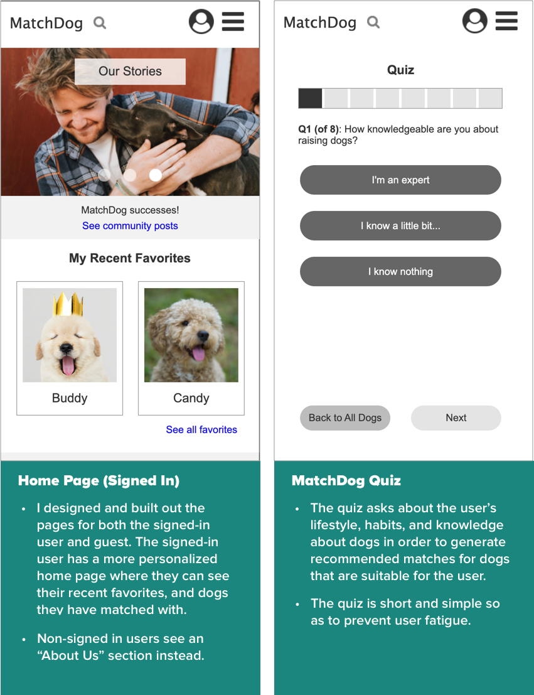

<!DOCTYPE html>
<html>
</html>
<head>
  <meta charset="utf-8">
  <meta http-equiv="X-UA-Compatible" content="IE=edge">
  <title>MatchDog | Project 4</title>
  <meta name="description" content="">
  <meta name="viewport" content="width=device-width, initial-scale=1">
  <meta name="robots" content="all,follow">
  <!-- Bootstrap CSS-->
  <link rel="stylesheet" href="vendor/bootstrap/css/bootstrap.min.css">
  <!-- Font Awesome CSS-->
  <link rel="stylesheet" href="vendor/font-awesome/css/font-awesome.min.css">
  <!-- Google fonts - Roboto-->
  <link rel="stylesheet" href="https://fonts.googleapis.com/css?family=Roboto:400,300,700,400italic">
  <!-- owl carousel-->
  <link rel="stylesheet" href="vendor/owl.carousel/assets/owl.carousel.css">
  <link rel="stylesheet" href="vendor/owl.carousel/assets/owl.theme.default.css">
  <!-- theme stylesheet-->
  <link rel="stylesheet" href="css/style.turquoise.css" id="theme-stylesheet">
  <!-- Custom stylesheet - for your changes-->
  <link rel="stylesheet" href="css/custom.css">
  <!-- Favicon-->
  <!-- <link rel="shortcut icon" href="img/favicon.png"> -->
  <link rel="apple-touch-icon" sizes="180x180" href="favicon/apple-touch-icon.png">
  <link rel="icon" type="image/png" sizes="32x32" href="favicon/favicon-32x32.png">
  <link rel="icon" type="image/png" sizes="16x16" href="favicon/favicon-16x16.png">
  <link rel="manifest" href="favicon/site.webmanifest">
  <!-- Tweaks for older IEs--><!--[if lt IE 9]>
    <script src="https://oss.maxcdn.com/html5shiv/3.7.3/html5shiv.min.js"></script>
    <script src="https://oss.maxcdn.com/respond/1.4.2/respond.min.js"></script><![endif]-->
</head>
<body>
  <!--to keep Firefox from showing body text before head is loaded- FOUT-->
  <script>0</script>
  <div id="all">
    <div class="container-fluid">
      <div class="row row-offcanvas row-offcanvas-left"> 
        <!--   *** SIDEBAR ***-->
        <div id="sidebar" class="col-md-4 col-lg-3 sidebar-offcanvas">
          <div class="sidebar-content">
            <h1 class="sidebar-heading"> <a href="index.html">Alexandra Huang</a></h1>
            <p class="sidebar-p">I'm a product designer/UX researcher and recent graduate with a master's in Human Factors and Ergonomics.</p>
            <p class="sidebar-p">Currently based in the San Francisco Bay Area.</p>
            <ul class="sidebar-menu">
                <!-- Link-->
                <li class="sidebar-item"><a href="index.html" class="sidebar-link active">Portfolio</a></li>
                <!-- Link-->
                <li class="sidebar-item"><a href="about.html" class="sidebar-link">About</a></li>
                <!-- Link-->
                <li class="sidebar-item"><a href="contact.html" class="sidebar-link">Get in touch</a></li>
            </ul>
            <p class="social"><a href="mailto:alexandra[dot]huang[at]gmail[dot]com" data-animate-hover="pulse" class="email"><i class="fa fa-envelope"></i></a><a href="https://www.linkedin.com/in/alexandrayhuang" data-animate-hover="pulse" class="external linkedin"><i class="fa fa-linkedin"></i></a><a href="https://github.com/alexandra-huang" data-animate-hover="pulse" class="external github"><i class="fa fa-github"></i></a></p>
            <div class="copyright text-center text-md-left">
              <p class="credit">Copyright &copy; 2021 Alexandra Huang | Template by <a href="http://bootstrapious.com/portfolio-themes" class="external">Bootstrapious.com</a></p>
              <!-- Please do not remove the backlink to us, unless you support the development at http://bootstrapious.com/donate. It is part of the license conditions. Thanks for understanding :)        -->
            </div>
          </div>
        </div>
        <!--   *** SIDEBAR END ***  -->
        <!--   *** DETAIL ***-->
        <div class="col-md-8 col-lg-9 content-column white-background">
          <div class="small-navbar d-flex d-md-none">
            <button type="button" data-toggle="offcanvas" class="btn btn-outline-primary"> <i class="fa fa-align-left mr-2"></i>Menu</button>
            <h1 class="small-navbar-heading"> <a href="index.html">Alexandra Huang</a></h1>
          </div>
          <div class="row">
            <div class="col-xl-10">
              <div class="content-column-content">
                <h1>MatchDog Mobile Website</h1>
                <p class="lead"><strong>Designed and prototyped </strong>a mobile website for a nonprofit dog rescue center-and-shelter network to help match users to the best dog for them as a project for Interaction Design I at San Jose State University.</p>
                
                <br><br>
                <p class="proj-body link"><a href="matchdog-prototype/home__not_signed_in_.html">Link to full clickable Axure prototype (mobile)</a></p>

                <blockquote class="blockquote">
                  <p class="mb-0"><strong>Keywords:</strong> UX design, interaction design, journey mapping, user stories, personas, iteration, prototyping, Axure</p>
                  <br>
                  <p class="mb-0"><strong>Team:</strong> 3 designers: <strong>mobile (me)</strong>, 2 other students for web and B2E</p>
                  <br>
                  <p class="mb-0"><strong>When:</strong> Feb. - Mar. 2019</p>
                </blockquote>
                <hr>
                <h3>Background</h3>
                <p>MatchDog is a fictional nonprofit network of dog rescue centers and shelters. They aim to place rescue dogs with the best homes and owners they can go to, seeking to match dogs to the most suitable owners, based on the owner's lifestyle, habits, interest, and personal preferences. MatchDog also strives to satisfy the owners with their matched dog, handling the potential owners' experience from searching for a dog to adopt through to adoption. Those whose lifestyles are not suited to real dogs can get a robot dog through a large donation to MatchDog, sponsored by the RoboDog company.</p>
                <hr>

                <!--User and Business Problems-->
                <h3>Problems and Opportunities</h3>
                <p class="proj-body">The following user and business needs and goals were extracted from the design brief for this project.</p>
                <p class="proj-body"><strong>User Goals:</strong> </p>
                <ul class="proj-body-list">
                  <li>To <strong>find the perfect dog</strong> for them that suits their lifestyle and preferences</li> 
                  <li>To learn how the dog adoption process works</li>
                  <li>To learn about caring for a dog</li> 
                  <li>To learn about dog health</li>
                  <li>To schedule an appointment to discuss adoption and adopt a dog</li> 
                </ul>
                <p class="proj-body"><strong>Business Goals:</strong></p>
                <ul class="proj-body-list">
                  <li>To <strong>make happy, successful matches</strong> between dogs and owners</li>
                  <li>To promote "Today's Mutt" to help get the featured dog adopted</li>
                  <li>To help users learn about MatchDog's adoption process</li> 
                  <li>To <strong>provide useful information</strong> to <strong>first-time dog owners</strong> so that they can best care for their dog (e.g. spaying and neutering, dog health, etc.)</li>
                  <li>To get happy dog owners to <strong>spread the word about MatchDog</strong></li>
                  <li>To get people to <strong>donate</strong> (since it's a nonprofit), either directly or by purchasing a robot dog</li>
                  <li>To <strong>facilitate the dog adoption process</strong> from letting potential dog owners meet the dogs through to taking them home</li>
                </ul>
                <p></p>
                
                <hr>
                <h3>Design Process</h3>
                <p class="proj-body">Given the nature of the Interaction Design I course and its focus on interaction design, I did not conduct user research and instead worked under the assumption that the information we were given in the design brief would be normally collected through the necessary research step that precedes design. My team and I developed the following four personas who will be interacting with MatchDog.</p>
                <p></p>

                <h4>Personas</h4>
                <p class="proj-body"><strong>Jeff, the recent college graduate and first-time dog owner</strong>: Jeff wants to adopt a dog because he is lonely and seeks companionship. Since it is his first time living on his own, he also thinks that a dog will help him feel safer, alerting him to intruders. Having a dog will also help him to have a healthier lifestyle, as taking a dog for walks should force him to exercise regularly and spend more time outdoors.</p>
                <p class="proj-body"><strong>Rowan, the recently single bachelor who wants to meet people</strong>: Having gotten out of a relationship recently, Rowan wants to adopt a dog in the hopes of finding a new partner. He has seen many people walking their dogs in the dog park nearby and plans to get a dog in order to mingle with fellow dog owners. He has also heard that having a dog makes one appear more attractive.</p>
                <p class="proj-body"><strong>Samantha, the mom who wants to teach her kids to be responsible</strong>: Samantha is a mother of two who wants to teach her teenage kids to be more responsible, since she fears they're becoming spoiled. She wants to adopt a dog that she plans to have her two kids be in charge of, in the hopes that being responsible for another living creature's well-being will teach her kids the skill they need to be more responsible for themselves and their upcoming adulthood responsibilities. By learning to care for a dog, train a dog, take the dog to the vet, and walk the dog regularly, she thinks that her kids will develop a routine and more empathy for her position as a mother and wokring parent.</p>
                <p class="proj-body"><strong>Ella, the dog owner who can't keep her dog</strong>: Ella is a current dog owner whose fiancé is seriously allergic to dogs. Since they've decided to get married and will be living together for the rest of their lives and she chose her human partner over her dog, Ella needs to find her dog a new home and a better-suited owner. She wonders how this can be done in the least harmful way.</p>
                

                <p></p>
                <!--Journey Map-->
                <h4>Journey Map</h4>
                <p class="proj-body">I then created a journey map--based off of the <strong>first-time dog owner persona</strong>, Jeff--to capture the user's possible <strong>feelings and thoughts</strong> at each step of their journey to and through dog adoption, run in parallel <strong>with their use of MatchDog's services, website (desktop), and mobile site</strong>. Brand touch points cover possible channels through which the user hears about MatchDog.</p>
                <a href="#imgJ">
                  
                </a>
                <p class="proj-body caption"><em>This journey map visualizes the user's experience through the process, from first thinking about getting a dog through to becoming a happy dog owner after having used MatchDog.</em></p>
                
                <!-- lightbox container hidden with CSS -->
                <a href="#_" class="lightbox" id="imgJ">
                  
                </a>
                <br>
                
                <p class="proj-body">Journey mapping Jeff's experience leading up to adoption and throughout the process helped ensure that I would have a sense for what to include in the design to make sure that Jeff's worries and fears are eased.</p>
                <p></p>
  
                <!--Conceptual Model-->
                <h4>Conceptual Model</h4>
                <p class="proj-body">My team and I developed a conceptual model to organize all of the actions, objects, and attributes that make up the MatchDog website. The conceptual model aided in the <strong>consistency</strong> of my later design. The conceptual model is the idealized view that you as the designer hope that the user will internalize as they use your design.</p>
                <h5>Object-Action Matrix</h5>
                <p class="proj-body">My team and I broke down the MatchDog site into the following objects and actions, with as dense of a resulting matrix as possible:</p>
                
                <br>
                <p class="proj-body">These object-action pairs can be looked at as actions that are somehow linked to the objects; for example, a <strong>dog can be donated</strong> to MatchDog (as is the case with persona 4, Ella), and a dog owner is the one donating, hence the X's in both cells. A dog owner can also <strong>donate money</strong> to MatchDog, or time in the form of volunteering.</p>

                <h5>Object-Attribute Table</h5>
                <p class="proj-body">We then expanded each of the four objects (dog, owner, organization--a.k.a. MatchDog, and money) into their corresponding attributes to build the conceptual grammar for the design. Attributes are qualities that you can search, sort, or filter on objects. An extensive object-attribute table helps to <strong>prevent inconsistencies in the design</strong> resulting from objects and attributes that get treated interchangeably, thus leading to confusion for the user.</p>

                <a href="#imgA">
                  
                </a>
                <p class="proj-body caption"><em>Dogs have attributes such as personality; for example, a potential dog owner may want a happy dog and not a calm one.</em></p>
                
                <!-- lightbox container hidden with CSS -->
                <a href="#_" class="lightbox" id="imgA">
                  
                </a>

                <!--Prioritization Matrix-->
                <h5>Prioritization Matrix</h5>
                <p class="proj-body">Following the four main personas we created, I prioritized object-action pairs by the relative quantity of users that would be performing that action and the frequency, with those object-action pairs used by many users frequently taking highest priority. Object-action pairs related to financial impact toward MatchDog are also included.</p>
                
                
                <p class="proj-body caption"><em>This priority matrix shows that object-action pairs such as adopting a dog and meeting a dog are most commonly used, while donating a dog is much more rarely performed and by fewer people. Many people will donate small amounts of money compared to fewer large donations.</em></p>
                <br>

                <!--Sketches-->
                <h4>Sketches</h4>
                <p class="proj-body">I sketched out possible designs for the MatchDog mobile website, following the framework laid out by the detailed conceptual model and grammar above.</p>

                <br>
                <!--my sketches - clickable image-->
                <a href="#imgSketch1">
                  
                </a>
                <!-- lightbox container hidden with CSS -->
                <a href="#_" class="lightbox" id="imgSketch1">
                  
                </a>
                <p class="proj-body caption"><em>The sketches show several different menu structures, with the hamburger menu being an <strong>action-based</strong> menu, while the secondary menu under the profile photo is <strong>attribute-based</strong>.</em></p>
                <br>

                <!--END SKETCHES-->

                <!--Experience Flow-->
                <h4>Experience Flow</h4>
                <p class="proj-body">I then built out an experience flow diagram to think about how one of the main experiences of MatchDog--viewing matched dogs and choosing a dog--is experienced by the user.</p>

                <br>
                <!--my sketches - clickable image-->
                <a href="#imgFlow">
                  
                </a>
                <!-- lightbox container hidden with CSS -->
                <a href="#_" class="lightbox" id="imgFlow">
                  
                </a>
                <p class="proj-body caption"><em>This experience flow depicts the user's journey through the MatchDog mobile website from getting matches by taking the MatchDog quiz or viewing all dogs.</em></p>
                
                <p class="proj-body">The experience flow helped me consider all of the steps the user goes through and the decisions that the user needs to make at any point along the way.</p>

                <br>
                
                <!--Grid Design-->
                <h4>Grid Design</h4>
                <p class="proj-body">To ensure that a proper grid is followed in the page layout, I put together the following grid designs based on my sketches, before making the final design. Good grid design means making sure that <strong>each region in the grid has a purpose</strong>, following proper information hierarchy and placing <strong>global actions at the top</strong>, with <strong>local actions close to the objects they affect</strong>, as well as being <strong>consistent</strong> with the grid and conceptual grammar across all multiple screens.</p>
                <a href="#imgGrid">
                  
                </a>
                <!-- lightbox container hidden with CSS -->
                <a href="#_" class="lightbox" id="imgGrid">
                  
                </a>

                <p class="proj-body caption"><em>The mobile site grids are one column due to restriction of the screen width, so they are relatively simple.</em></p>
                
                <br>
                <!--Designing and Prototyping-->
                <h4>Designing and Prototyping</h4>
                <p class="proj-body">The conceptual model and grammar were essential in keeping track of all of the various components of the MatchDog site and services. I iterated on the initial design based on feedback received in a design critique from the professor. Some of the final screens of the Axure prototype and explanations are shown below.</p>

                <div id="main-slider" class="owl-carousel owl-theme mdslider">
                  <div class="item"></div>
                  <div class="item"></div>
                  <div class="item"></div>
                  <div class="item"></div>
                </div>
                <!-- /#main-slider-->
                <p class="proj-body link"><a href="matchdog-prototype/home__not_signed_in_.html">Link to full clickable Axure prototype (mobile)</a></p>
                <br>

                <hr>
                <h3>Takeaways</h3>
                <ul class="proj-body-list">
                  <li>A <strong>thorough conceptual model and grammar</strong> is essential in designing a consistent, complete solution that the user can navigate and understand, especially when there are so many attributes to keep track of.</li> 
                  <li>Building out a complete prototype, with all of the detailed cross-linking between pages, takes a lot of work and <strong>testing of the prototype</strong>.</li>
                  <li><strong>Journey mapping</strong> is a useful tool for getting a feel for the user's emotions and thoughts that accompany the actions they take with regard to the design and beyond.</li> 
                </ul>


                <!-- Previous and Next buttons -->
                <nav aria-label="Portfolio navigation">
                  <ul class="pagination justify-content-center">
                    <li class="page-item"><a class="page-link" href="project3-acme.html">Previous</a></li>
                    <!-- <li class="page-item"><a class="page-link" href="index.html">Portfolio</a></li> -->
                  </ul>
                </nav>
                <!-- Previous and Next buttons end-->
              </div>
            </div>
          </div>
        </div>
      </div>
    </div>
  </div>
  <!-- JavaScript files-->
  <script src="vendor/jquery/jquery.min.js"></script>
  <script src="vendor/popper.js/umd/popper.min.js"> </script>
  <script src="vendor/bootstrap/js/bootstrap.min.js"></script>
  <script src="vendor/jquery.cookie/jquery.cookie.js"> </script>
  <script src="vendor/owl.carousel/owl.carousel.js"></script>
  <script src="vendor/masonry-layout/masonry.pkgd.min.js"></script>
  <script src="js/front.js"></script>
</body>